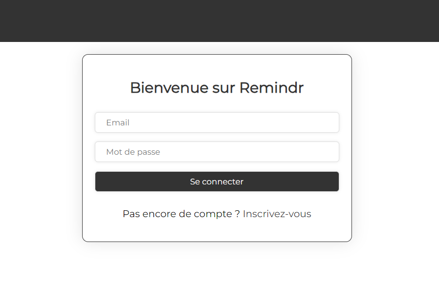

Remindr - Application de gestion de rappels

Le contexte du projet
Ce projet vise à développer une application web collaborative, Remindr,
permettant aux utilisateurs de gérer des rappels au sein de groupes. Il combine la création de rappels,
la gestion des utilisateurs, et la collaboration au travers d’une interface intuitive.
Il est réalisé en binôme pour évaluer nos compétences dans le développement
backend avec Node.js, ainsi que notre capacité à structurer une application robuste et sécurisée.
L'ambition du projet
L'objectif principal était de créer une application de gestion de rappels en
répondant aux besoins suivants:
- Fournir un outil collaboratif intuitif pour la gestion de rappels.
- Implémenter des fonctionnalités robustes pour la création, la modification et l’organisation des rappels.
- Assurer un système de groupes et d’interactions sécurisés entre les utilisateurs.
Le tout, en respectant les bonnes pratiques de développement logiciel et une architecture bien pensée.

Techologies utilisés
Pour développer cette application web j'ai utilisé les langages suivants :
- HTML
- CSS
- JavaScript
- Handlebar
J'ai également utilisé les technologies suivantes :
- Node.js : C'était le framework imposé pour ce projet.
- Express.js : Choisi comme framework pour le côté serveur de l'application en raison de sa simplicité et de sa flexibilité.
- Prisma : Facilite l'interaction avec la base de données MySQL.
- Bcrypt : Utilisé pour le hachage sécurisé des mots de passe des utilisateurs avant de les stocker en base de données.
- MySQL : Choisi pour stocker les données de l'application. Elle offre une performance élevée et une grande fiabilité.
Compétences Développées
Techniques :
- Mise en œuvre d’un backend robuste avec Express.js.
- Utilisation avancée de Prisma.js pour gérer les relations entre les utilisateurs, groupes, et rappels.
- Implémentation de l’authentification et des sessions utilisateur.
Transversales :
- Collaboration et gestion de projet en binôme.
- Respect des normes de documentation et des bonnes pratiques de développement.
- Organisation et structuration efficace d’un projet complexe.
Humaines :
- Communication et coordination avec le coéquipier.
- Gestion des priorités et des deadlines.
- Résolution collaborative des problèmes techniques.
Conclusion : Retour d’Expérience et Apprentissage
Ce projet nous a permis de consolider nos compétences en Node.js et de découvrir l’intégration de technologies complémentaires
telles que Prisma et Handlebars. La gestion des relations entre utilisateurs, groupes, et rappels a été un défi technique que
nous avons relevé en adoptant une approche modulaire et itérative.
Nous avons également appris l’importance d’une documentation claire et d’un code bien structuré pour faciliter la maintenance
et l’évolutivité. Des améliorations possibles incluraient l’ajout de notifications en temps réel pour les rappels ou l’intégration
de fonctionnalités supplémentaires comme des rappels récurrents.